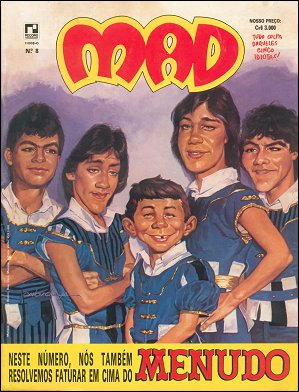

Site não oficial da Revista MAD no Brasil
Início
Edições
Internacional
História
Links
Início
/
2ª Edição
/
Números
/
MAD nº 8

Revista MAD
MAD nº 8
Março de 1985
Editora Record · 2ª Edição
Clique na capa para ampliar.
Anterior
MAD nº 7
Próximo
MAD nº 9
← Voltar para números